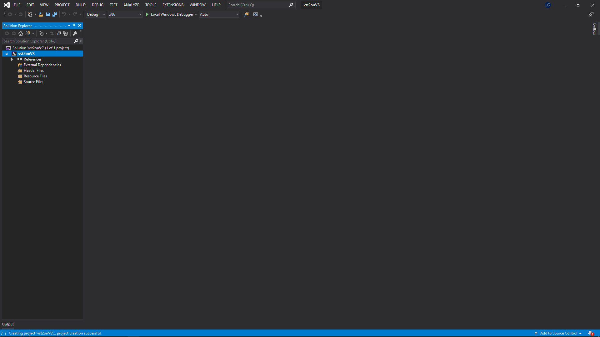
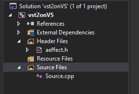
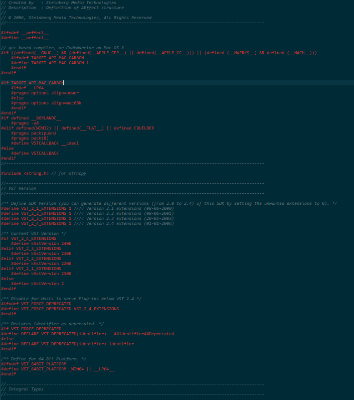
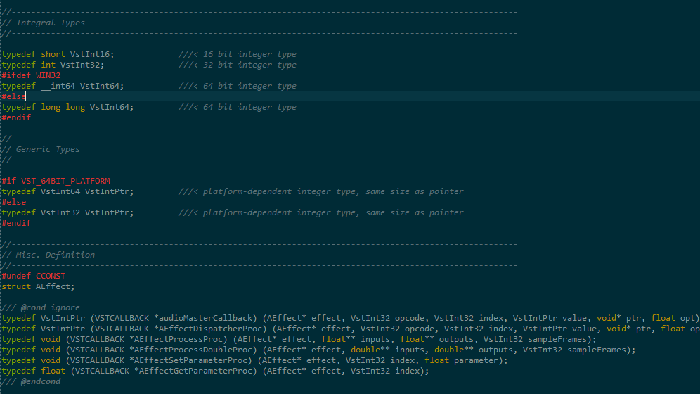
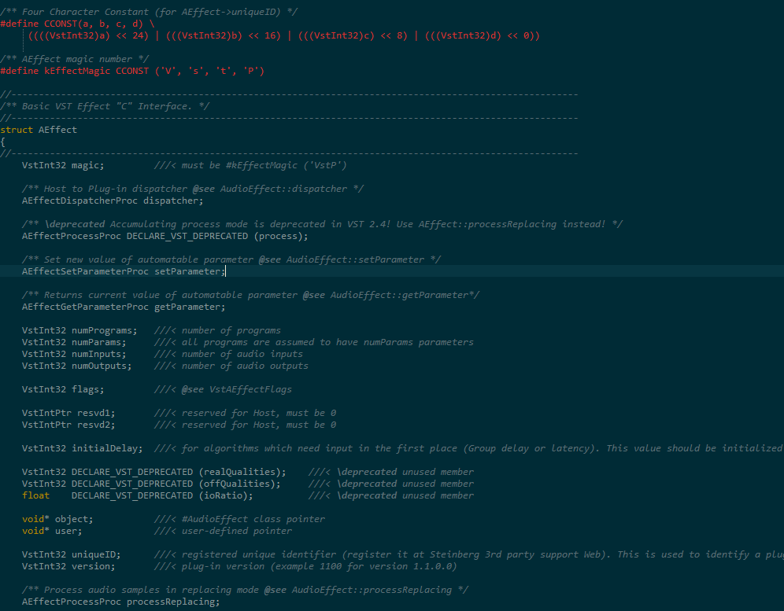
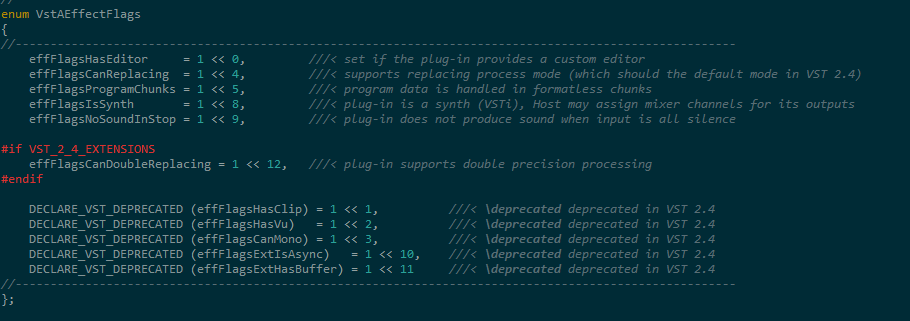
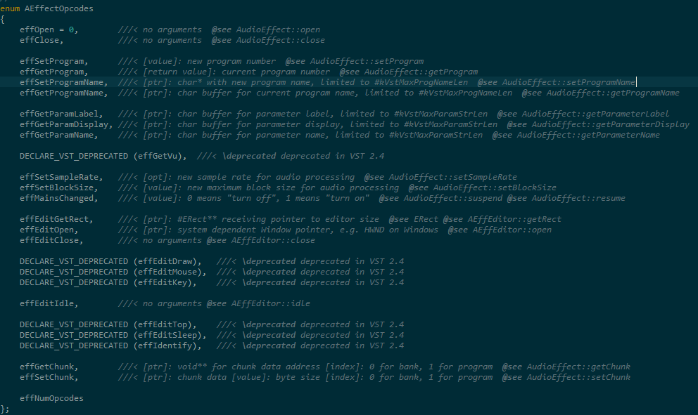
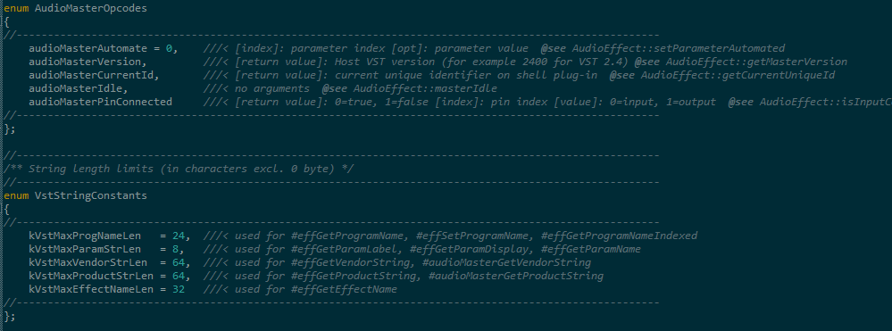
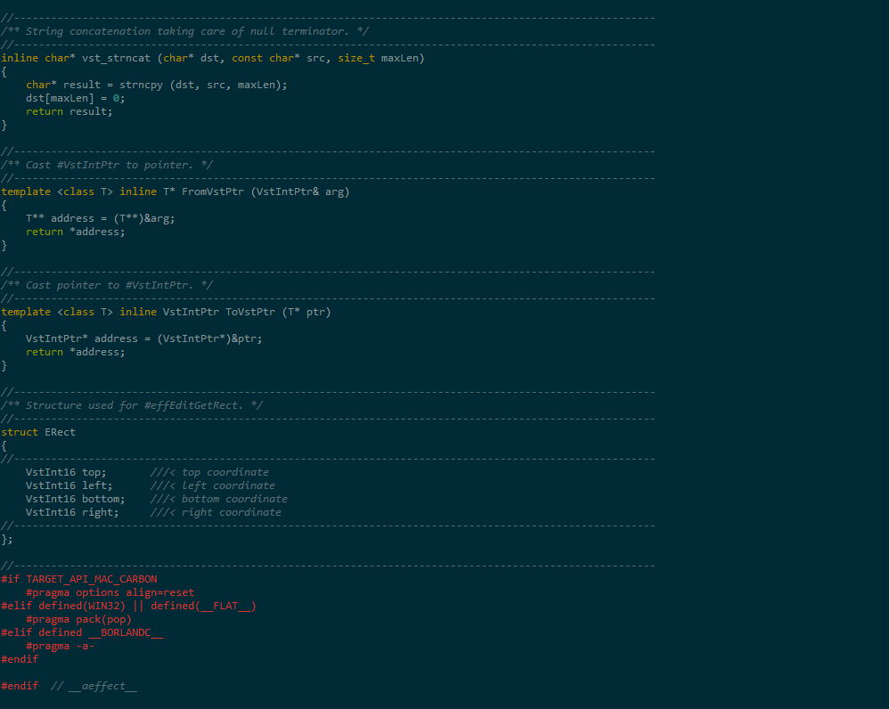
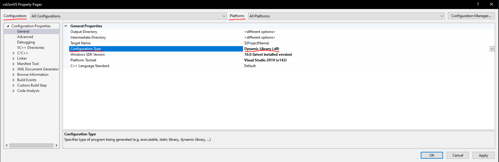

Woo_Ramblign
Demystifying the VST2 SDK
July 17 2021
If you’re not familiar with the VST2 SDK, then you would be forgiven for thinking that most of the files in the source tree are the bare-minimum requirement for building a VST plugin. After all, the example plugins wouldn’t compile without these files, right? You’ll need even more files supplied by the SDK if you want a custom GUI for your plugin. All in all, it seems that the VST2 format is very complected and has a lot of moving parts- but actually, this couldn’t be farther from the truth.
In fact, the VST2 SDK at its very core is only a single header file. You could compile a working plugin with two files: one source file and one header file, and that’s what I’ll show you how to do.
First, download the VST2 SDK: https://archive.org/details/VST2SDK
Steinberg’s VST3 SDK has some old VST2 source files, but it doesn’t have the necessary header files described here, so you’ll have to download an archived version of the original VST2 sdk (linked above).
The header file you’ll need is aeffect.h which can be found in pluginterfaces\vst2.x. In the same folder there is another header file you might notice, aeffectx.h, which can be (and should be) used with aeffect.h to give you all the functionality you’ll need without all the SDK bloat. I’ll only use aeffect.h for now.
You can use any IDE or build system you want. As long as you build a shared library (DLL on windows) you’ll end up with a VST plugin. I’ll just use Visual Studio, the de facto c++ IDE for demonstrating stuff like this it seems.
STEP 1:
Start an empty project.

STEP 2:
Put aeffect.h in the project, and create a source file too.

STEP 3:
That's it (for now).
So what’s the magic behind aeffect.h that can turn anything into a plugin? Well, it’s simply a set of structs, enums, and functions that a DAW recognizes in order to to be the “host” of a plugin. The term “host” is used to describe what environment the plugin is running in (usually a DAW), so if you open Serum in FL studio, then you could say Serum is the plugin and FL Studio is the host.
The most important function is probably the “entry point” which is the function that your DAW recognizes and uses to load the VST plugin:
AEffect *VSTPluginMain(audioMasterCallback vstHostCallback);
AEffect is a struct defined in aeffect.h that represents your plugin. It isn’t quite the plugin itself, your plugin might have processing or GUI functions that operate entirely independently of AEffect. In a sense, you can think of it as a buffer for data shared between your plugin and the host. VSTPluginMain returns a pointer to an AEffect, but the host is the one who calls VSTPluginMain in the first place, so maybe you can see where things are going:
You have to create an instance of AEffect yourself and return a pointer to it via VSTPluginMain.
The vstHostCallback parameter of type audioMasterCallback is a function pointer that you should save somewhere; it’s one of the ways you can interact with the host.
The specifics of this are described later.
Let’s examine the aeffect.h file itself…
The top is entirely made up of processor definitions:

For the most part you can ignore them. They deal with deprecation, version control, and platform stuff (struct packing).
After the defines are some typedefs:

The typedefs at the top and middle are mostly self-explanatory; they are standard types that the VST2 format is putting under a custom name and adapting per platform. However, the complexity goes from low to high once we reach the bottom. First you can see that the AEffect struct is being declared so it can be used in the types below it. The final types at the bottom are all function pointers. We already dealt with the first one above, audioMasterCallback, in VSTPluginMain. While audioMasterCallback is supplied by the host, all the remaining function pointers are for functions that you as the plugin developer have to supply. Here’s what each does (from bottom to top):
AEffectGetParameterProc – The host calls this to get the value of a parameter in your plugin.
AEffectSetParameterProc – The host calls this when it wants to set a parameter in your plugin.
AEffectProcessDoubleProc – This function is called by the host, and it gives you arrays of input samples that you modify and write to arrays for output samples. This is where the audio processing happens.
AEffectProcessProc – This function is the same as the previous one, except it operates on the float data type rather than double.
AEffectDispatcherProc – This is a general-purpose function for the host to send information to your plugin. You use the opcode argument to determine what the host is trying to tell your plugin, and the remaining parameters depend on the information being sent.
audioMasterCallback – This is a function pointer for the plugin to call rather than the host. It’s similar to AEffectDispatcherProc, except its for you to send information to the host rather than the other way around.
Following the typedefs are the implementation for AEffect and some more defines:

The defines are for setting the magic variable in AEffect. You just set it to kEffectMagic when you create an instance of AEffect. The magic going on there is the fact that the host checks to make sure that magic is formatted as expected to determine if the VST file is corrupted, or if the file is even a VST plugin in the first place (after all, there are other types of DLLs out there).
The remaining members of the AEffect struct are:
variables for actually storing the function pointers we talked about earlier,
variables for storing plugin-related data (programs, params, numInputs, etc),
reserved variables (they will never be used).
The numInputs and numOutputs variables are for storing how many audio inputs or outputs your plugin has: effects usually have 2 inputs and 2 outputs, Synths don’t need any inputs, etc. I believe that synths can have inputs that just remain unused, so it might be reasonable to just set both variables to 2 for any plugin. The two inputs/outputs correspond to the left and right audio channels.
Following the AEffect struct definition are flags that can be used for the flags variable:

And that is followed by the opcodes used in AEffectDispatcherProc which are too details to get into here (and commented well enough to not need much explanation):

Which is in turn followed by opcodes for audioMasterCallback and some constants for strings:

The remaining part of the file...

Just consists of inline string manipulation functions, casting functions, and the ERect struct which is used when your plugin has a custom GUI.
So while aeffect.h certainly isn’t a small header file, there is still a very little amount of stuff going on compared to the whole VST2 SDK. The file itself can be summarized as:
Unimportant preprocessor stuff,
function pointer typedefs (and normal typedefs),
AEffect,
enums for various things,
extra functions that aren’t really needed.
This file is all you need for a bare-minimum VST2 plugin. Let’s go back to visual studio…
You’ll have to change the project properties to build a DLL. Right click project > properties > Configuration Properties > General > Configuration Type = DLL
Also make sure ALL CONFIGURATIONS and ALL PLATFORMS are selected for configuration and platform above, or else the settings won’t apply to all configurations.

Now put the following in your source file:
#include "aeffect.h" //include the special header file
#include <stdlib.h> //for malloc used later
extern "C" { //the host expects symbol names not to be what’s called “mangled,” and this helps with that if this is in a c++ file.
audioMasterCallback hostCallback; //Declaring hostCallback – a function pointer to possibly call in the future to communicate with the host (explained in sections above).
//The function definition for one of the function pointers set in AEffect (referenced later)
VstIntPtr VSTCALLBACK dispatcherProc(AEffect* effect, VstInt32 opcode, VstInt32 index, VstIntPtr value, void* ptr, float opt) {
return 0;
}
//The function definition for one of the function pointers set in AEffect (referenced later)
void VSTCALLBACK setParameterProc(AEffect* effect, VstInt32 index, float parameter) {
}
//The function definition for one of the function pointers set in AEffect (referenced later)
float VSTCALLBACK getParameterProc(AEffect* effect, VstInt32 index) {
return 0; //normally returns a parameter value
}
//The function definition for one of the function pointers set in AEffect (referenced later)
void VSTCALLBACK processProc(AEffect* effect, float** inputs, float** outputs, VstInt32 sampleFrames) {
}
//The function definition for one of the function pointers set in AEffect (referenced later)
void VSTCALLBACK processDoubleProc(AEffect* effect, double** inputs, double** outputs, VstInt32 sampleFrames) {
}
AEffect* effectInstance; //Pointer to an instance of AEffect being declared so we can store it.
//Our entry point has __declspec(dllexport) for windows
__declspec(dllexport) AEffect* VSTPluginMain(audioMasterCallback vstHostCallback) {
hostCallback = vstHostCallback; //Store the host callback function in the hostCallback function pointer near the top of the file for possible later use
effectInstance = (Aeffect*)malloc(sizeof(AEffect)); //Allocates size for us to store an instance of AEffect
effectInstance->magic = kEffectMagic; //Setting the magic variable so the host knows this is a VST plugin
//The following block sets the function pointer variables for the function declarations above so the host can call them.
effectInstance->dispatcher = &dispatcherProc;
effectInstance->setParameter = &setParameterProc;
effectInstance->getParameter = &getParameterProc;
effectInstance->processReplacing = &processProc;
effectInstance->processDoubleReplacing = &processDoubleProc;
//The following block sets some plugin variables
effectInstance->numPrograms = 0;
effectInstance->numParams = 1;
effectInstance->numInputs = 2;
effectInstance->numOutputs = 2;
effectInstance->flags = 0; //No flags here
effectInstance->initialDelay = 0;
//These can be NULL
effectInstance->object = NULL;
effectInstance->user = NULL;
effectInstance->uniqueID = 'ABCD'; //VST2 plugins are (supposed to) have ids registered with steinberg
effectInstance->version = 1000;
return effectInstance; //Return the AEffect instance to the host
}
}
Hopefully the comments clarify what’s going on.
Build it by right clicking the project and pressing “build” (you don’t want to try running it with the debugger, since we’re not building an executable). You’ll get an error. The error is caused by the fact that the string manipulation functions in aeffect.h are so old that they use functions which are unsafe. Since we aren’t using these functions you can just delete them. Delete the vst_strncpy and vst_strncat functions in aeffect.h, and it should build successfully. Also make sure that you’re building in the correct platform architecture (most likely x64 for your uses).
When using Visual Studio, my final DLL was in x64\Debug with the default project setup. Now that you have this DLL you can try scanning for it with your DAW, but there are many more efficient ways to test plugins:
VSTHost – https://www.hermannseib.com/english/vsthost.htm
Savihost – https://www.hermannseib.com/english/savihost.htm
MrsWatson – http://teragonaudio.com/MrsWatson (Especially useful if your plugin doesn’t open in a DAW or a host, since it’s a CLI tool you can debug more easily)